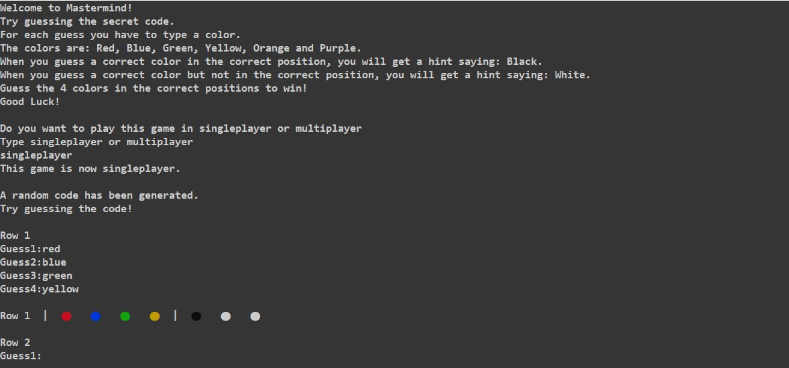

Mijn Werk
Mastermind is een spel waarbij een speler een geheime code moet raden.
De computer (of een tegenstander) maakt een code die jij dan moet raden door elke beurt 4 kleuren in te vullen.
Dan gaat de computer berekenen welke kleuren op de goede plek staan, en welke kleuren wel in de code zitten maar niet op de goede plek staan.
Hiervoor krijg je dus hints om te zien of je dichter in de buurt komt van de code of niet.
Raad de code binnen het maximaal aantal beurten om te winnen.
Deze applicatie is gemaakt in java eclipse. Met gebruik van ANSI code wordt tekst omgezet naar gekleurde bolletje's, maar hiervoor moet er wel een aparte extensie voor gedownload worden.

Een zwarte pin laat zien dat een kleur op de goede plek zit.
Een witte pin laat zien dat een kleur wel in de code zit, maar niet op de goede plek.
Raad alle kleuren op de goede plek om te winnen.

Om het spel een keer zelf te spelen.
Klik hier: Mastermind